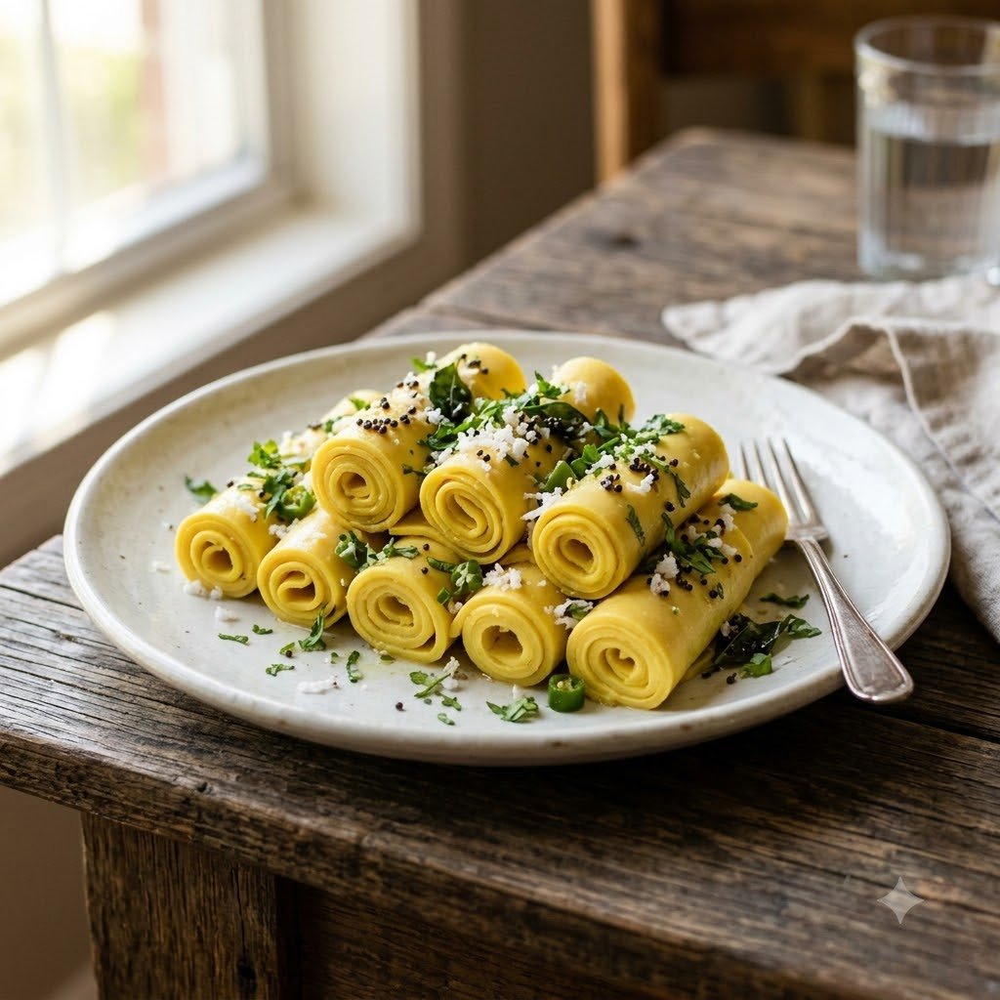

Khandvi

Khandvi
Chef Magic – Sauté Auto 18 min — Serves 4
Gluten-Free • Vegetarian • Gujarati • Low-Oil
Prep ahead: Have a greased flat plate or tray ready before you start — the batter must be spread while still hot.
Ingredients
- 1 cup besan (gram flour (besan))
- 1 cup yogurt
- 1.5 cups water
- 1/2 tsp turmeric (haldi)
- 1 tsp ginger (adrak)-green chilli (hari mirch) paste
- Salt to taste
- 1 tsp mustard seeds (rai)
- 9 curry leaves (kadi patta)
- 1 tbsp oil
- Grated coconut & chopped coriander (dhania) to garnish
Method
1Whisk besan, yogurt, water, turmeric, ginger-chilli paste and salt into a smooth, lump-free batter.
2Add to the jar; select Sauté (Speed 2–4, ~130–160°C) and cook, stirring constantly, for 12 minutes until thick and no longer raw-tasting.
3Working quickly, spread the hot batter thinly onto a greased plate; cool slightly and cut into strips, then roll each up.
4Temper mustard seeds and curry leaves in hot oil; pour over the rolls and garnish with coconut and coriander.
Tip: Spread the batter as soon as it’s cooked — it firms up fast and becomes hard to spread once it cools.